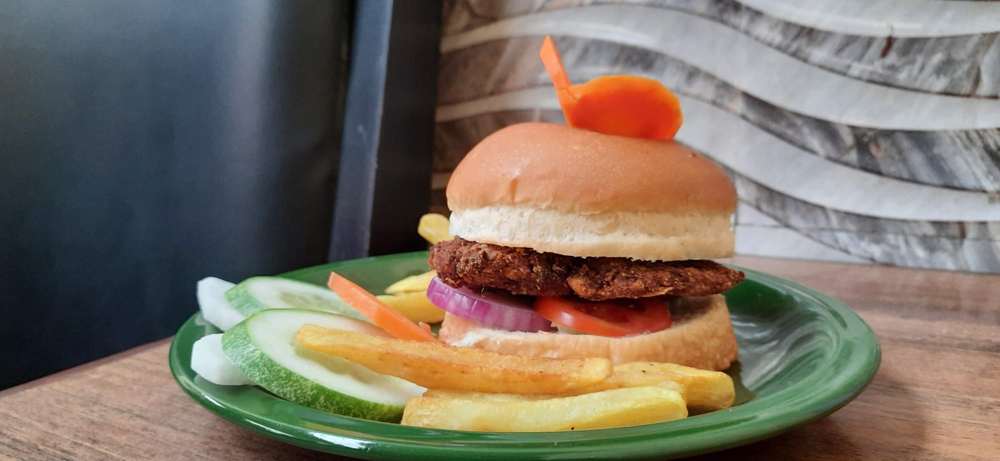

Exploring the World of Artisan Chocolates
Dive into the fascinating history, production methods, and current trends in the artisan chocolate industry.The history of chocolate dates back thousands of years to the ancient civilizations of Mesoamerica. The Olmecs, one of the earliest cultures in the region, are believed to be the first to cultivate cacao, utilizing it for ceremonial and medicinal purposes. The Mayans and Aztecs later adopted cacao, creating a drink known as xocoatl, which was often flavored with spices and enjoyed by nobility. Cacao was so valuable that it was even used as currency.
When chocolate made its way to Europe in the 16th century, it underwent a transformation. Initially consumed as a beverage, sugar was added to the bitter drink, making it more palatable to European tastes. The invention of chocolate bars in the 19th century revolutionized the industry, leading to mass production. However, the rise of mass-produced chocolate often came at the expense of quality and flavor, paving the way for a resurgence in artisan chocolate.
Artisan chocolate is characterized by its emphasis on quality ingredients, traditional methods, and creative flavor combinations. Unlike mass-produced chocolate, which often contains additives and preservatives, artisan chocolate makers prioritize pure, high-quality cacao and minimal processing. This dedication to craftsmanship allows for a richer, more complex flavor profile that appeals to chocolate connoisseurs.
The production of artisan chocolate begins with sourcing the best cacao beans from around the world. Regions such as Ecuador, Venezuela, and Madagascar are renowned for their unique cacao varieties, each imparting distinct flavors based on the terroir and growing conditions. Many artisan chocolatiers establish direct relationships with cacao farmers, ensuring fair trade practices and supporting sustainable farming methods.
Once the cacao is harvested, it undergoes fermentation, a crucial step that develops the beans’ flavor. After fermentation, the beans are dried and roasted, further enhancing their taste. The roasting process is carefully controlled, as it significantly influences the final chocolate flavor. After roasting, the beans are cracked open to reveal the nibs, which are ground into a paste known as chocolate liquor. This liquor can then be further refined into chocolate by separating the cocoa solids from the cocoa butter.
The blending and conching processes are where the artisan chocolatiers truly showcase their creativity. Blending involves combining different cacao varieties to achieve a specific flavor profile, while conching, which can take several hours to days, smooths the chocolate and develops its texture. This step is essential for achieving the velvety mouthfeel that artisan chocolate is known for. Finally, tempering is done to stabilize the chocolate, ensuring it has a glossy finish and a satisfying snap when broken.
Flavor innovation is one of the hallmarks of artisan chocolate. Chocolatiers experiment with various ingredients, from traditional flavors like sea salt and caramel to more adventurous combinations such as chili, lavender, or even exotic fruits. The art of pairing chocolate with complementary flavors elevates the tasting experience, inviting consumers to explore new and exciting profiles. Many artisans also incorporate local ingredients, paying homage to their regions and creating a unique connection between the chocolate and its surroundings.
Packaging and presentation also play a vital role in the artisan chocolate experience. Many chocolatiers take pride in crafting visually stunning packaging that reflects their brand’s identity. The aesthetic appeal of artisan chocolates is often enhanced by the use of vibrant colors, elegant designs, and eco-friendly materials. This attention to detail creates a memorable unboxing experience, making artisan chocolate not just a treat but also a thoughtful gift or a luxurious indulgence.
In recent years, the artisan chocolate movement has grown significantly, fueled by a rising consumer interest in high-quality, ethically sourced products. Chocolate festivals and tastings have become popular, offering enthusiasts the opportunity to discover and sample a variety of artisan chocolates from different makers. Social media platforms have also played a significant role in promoting artisan chocolatiers, allowing them to showcase their creations and connect with customers worldwide.
Sustainability remains a central theme in the artisan chocolate industry. As consumers become more conscious of the environmental and social impacts of their purchases, many chocolatiers are adopting sustainable practices. This includes sourcing cacao from farms that prioritize biodiversity, implementing eco-friendly packaging, and supporting community initiatives. The commitment to sustainability not only enhances the ethical aspect of artisan chocolate but also appeals to a growing segment of eco-conscious consumers.
The future of artisan chocolate looks bright as innovation continues to drive the industry. Trends such as bean-to-bar production, where chocolatiers oversee every step from sourcing to packaging, are gaining momentum. This model allows for complete control over quality and flavor, ensuring a truly artisanal product. Additionally, the incorporation of health-conscious ingredients, such as superfoods and reduced sugar options, is becoming increasingly popular as consumers seek to balance indulgence with wellness.
In conclusion, artisan chocolate is a celebration of flavor, craftsmanship, and creativity. From its ancient origins to the modern-day emphasis on quality and sustainability, the journey of chocolate is as rich and complex as its flavor. As the artisan chocolate movement continues to flourish, it invites us all to savor the nuances of this beloved treat, appreciate the artistry behind its creation, and support the dedicated makers who bring joy through their craft. Whether enjoyed alone or shared with loved ones, artisan chocolate remains a timeless indulgence that transcends borders and unites people through a shared passion for quality.